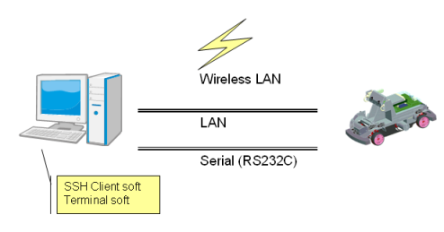
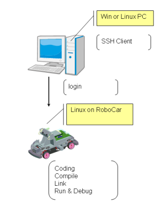
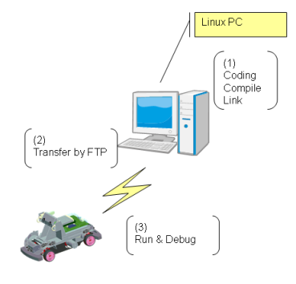

ZMP RoboCar Reference Manual
4. ソフトウェア環境・構成
概要
はじめに
（提供する機能）
ステレオ視による障害物検知
車線認識
各種センサ値の取得
駆動モータ、ステアリングの制御
CPUボード上でLinuxアプリケーションを作成することにより、RoboCarの全機能をコントロールできます。
RoboCarSDKは、Linuxアプリケーションを作成するためのクラスライブラリを提供します。 これはすべての機能へのインターフェイスになります。
また、ライブラリを使用したサンプルコードと、ライブラリのドキュメント(APIリファレンス)を提供しています。
RoboCarの画像認識/画像処理アルゴリズムは、ユーザの使用したい出力や、 動作の環境によっていくつかの調整が必要です。また、ステレオカメラの画像を 正規化するためのキャリブレーションが必要です。 これら画像認識についてのキャリブレーションおよび、調整のツール（Windowsアプリケーション） を添付しています。

図: ソフトウェア概要
環境
サンプルプログラムの利用、およびソフトウェア開発に必要な環境は以下のとおりです。 Windows8をお使いの場合も、従来のWindowsとまったく同様の手順で環境を構築できます。
- PC (Windows ; Windows8にも対応)
- 無線LANアクセスポイント
- シリアルケーブル(9ピンD-SUBコネクタのクロスケーブル)
- PC (Linux) : なくても可。エミュレータ環境でも可。
RoboCarの無線LANアクセスの暗号方式はWEPのみサポートしています。 無線LANアクセスポイントを、WEPの設定にしてください。
RoboCarのソフトウェア操作、開発は、RoboCar内のLinuxにログインして 操作する必要があります。SSH(Secure Shell)のクライアント が起動する、ネットワークにつながった端末(WindowsでもLinuxでも可)を 用意してください。
Windowsの場合、以下のようなソフトウェアがフリーで公開されています。
- TeraTerm
- PuTTY

図: 環境
また、初期のネットワークの設定をするために、RoboCarにはシリアルからログインしますので、 シリアルケーブルを用意してください。
RoboCarのLinuxアプリケーションは、RoboCarに搭載のLinux上で開発できます。 大規模な開発を行う場合や、すでにPC上でコード資産を持っている場合、また グラフィカルな環境で開発を行いたい場合は、別途Linuxの動作するPCを用意してください。

図: 開発環境その１

図: 開発環境その２
環境
Linux内のファイルシステムで、RoboCarのシステムは以下のような場所に インストールされています。
ディレクトリ、ファイル
- ライブラリ
/usr/local/lib/zmp/
- インクルードファイル
/usr/local/include/zmp/
- 実行ファイル,ツール
/usr/local/bin/zmp/
- サンプルコード
/root/zmp/samples
- デモプログラム
/root/zmp/demos
- 設定ファイル、データ
/root/zmp/config